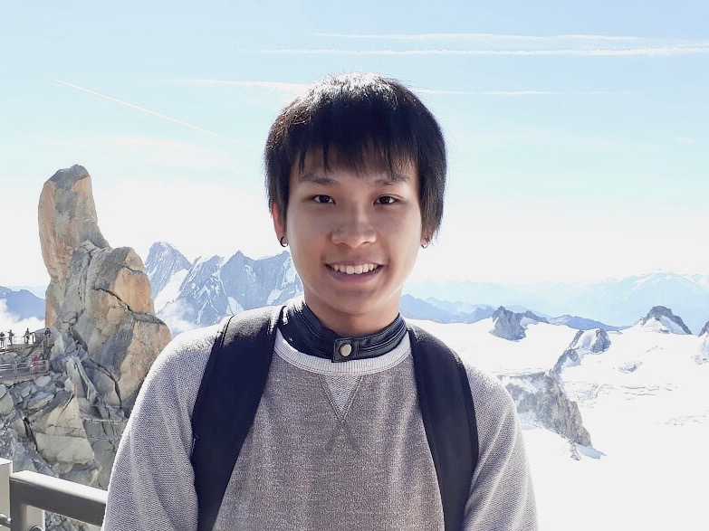

Style files are licensed under a Creative Commons Attribution 3.0 Unported License.
Style files are licensed under a Creative Commons Attribution 3.0 Unported License.

Bobbi Winema Yogatama
CS PhD Student at the University of Wisconsin-Madison
Research Assistant at Microsoft Gray Systems Lab
Contact: bwyogatama@cs.wisc.edu, v-byogatama@microsoft.com.
Google Scholar.
I am a PhD student in the Computer Science Department at the University of Wisconsin-Madison .
My research interests are in database for emerging hardware and cloud database. I am working with Prof. Xiangyao Yu
from Wisconsin DB Group to accelerate large-scale data analytics using accelerator such as GPU.
Currently, I am also a Research Assistant at Microsoft Gray Systems Lab .
During my first-year in Wisconsin, I worked with Prof. Matthew Sinclair and Prof. Michael Swift on Multi-GPU scheduling.
Prior to Wisconsin, I was a remote research student at the University of Chicago where I was advised by Prof. Yanjing Li to work on robust machine learning accelerator.
I received my BS in Electrical Engineering from Bandung Institute of Technology in 2018.
Previously, I have also interned as part of the RAPIDS team at NVIDIA (Summer 2022) and ALICE DCS group at CERN (Summer 2017).
For more information on what I do, see my publication list.
News:
Style files are licensed under a Creative Commons Attribution 3.0 Unported License.